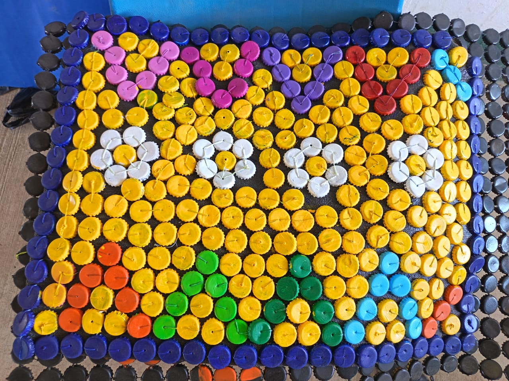
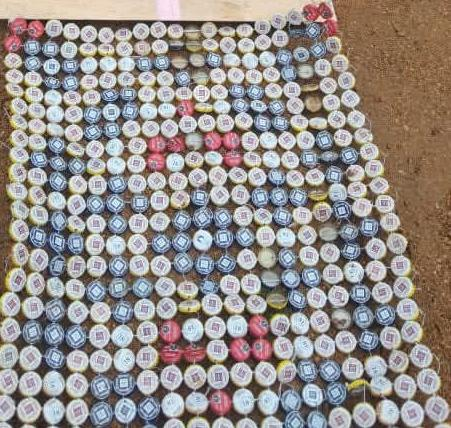

Elaboración de tapetes de corcholata
Las corcholatas, que normalmente terminan en la basura, pueden convertirse en hermosos tapetes hechos a mano. Estos trabajos no solo son decorativos, sino que también representan el esfuerzo, la paciencia y la creatividad de quienes los elaboran.
- Muy funcionables
- Sostenibles y reusables
- Decorativos
Acontinuación se muestran algunos de los muchos tapetes elaborados

